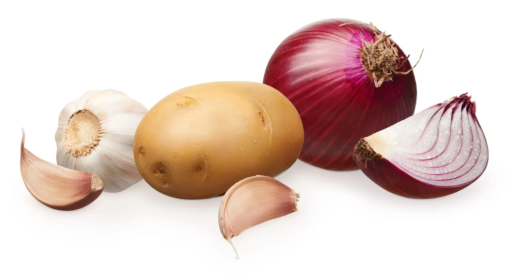
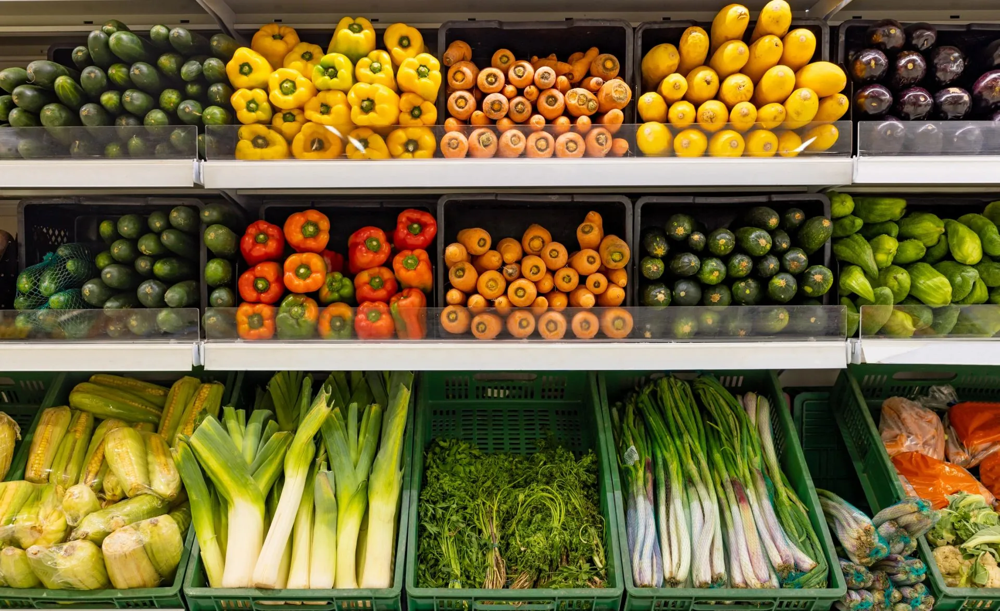
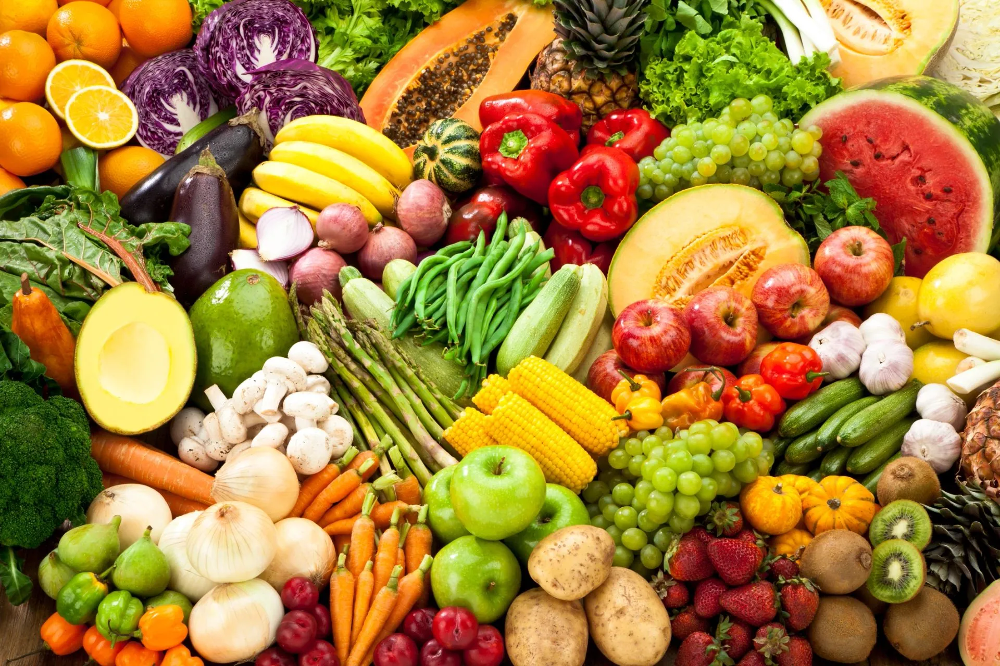
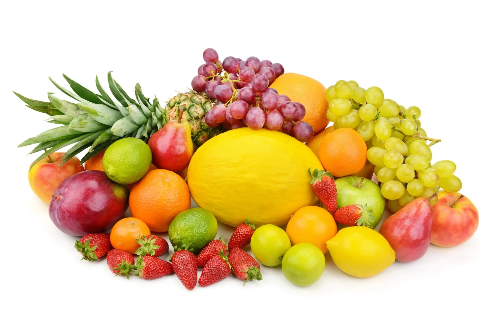

01
Our vegetables
Hard vegetables traded year-round from local and imported supply windows.
Trading
Fiesta Fresh sells into the local South African retail and wholesale market, as well as export markets across Africa and the Indian Ocean Islands. In our first year alone we shipped roughly 946 tonnes of produce internationally — including oranges, grapefruit, apples and grapes — reaching buyers in North America and East Africa.

How we trade
A confident, well-positioned trading business with the scale and partnerships to operate effectively across all markets.
Our business brings together a wide variety of products, from varying origins and supply windows, to meet customer demand year-round.
We pride ourselves on smart, responsive trading — connecting markets through strong partnerships, reliable supply and agile execution.
Our people are the energy behind our trading operations: a team built to move quickly, respond decisively and deliver value in fast-moving markets. We serve major retail chains, independent customers and export markets, with the scale and partnerships to operate effectively across all of them.

What we trade
Locally sourced and imported, across origins and seasons — serving major retail chains, independent customers and export markets.

01
Hard vegetables traded year-round from local and imported supply windows.

02
Export-grade and local-market fruit across the seasons.